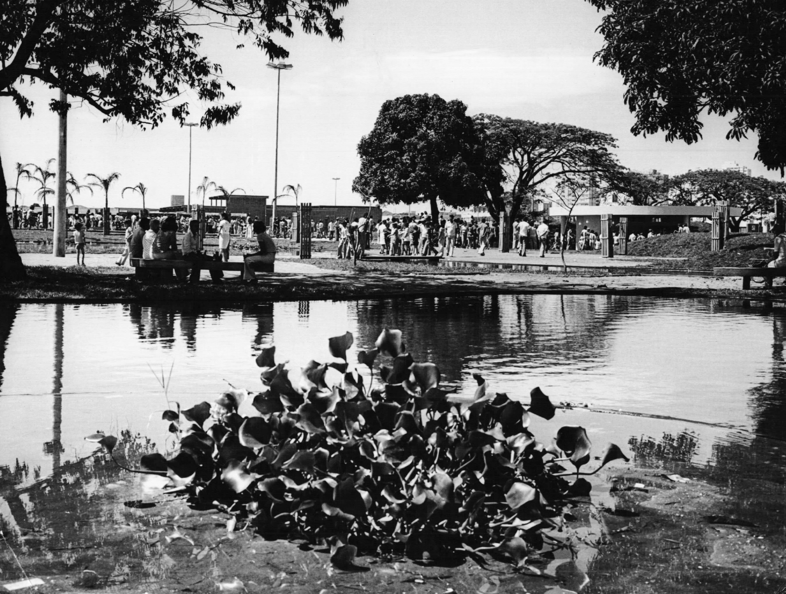
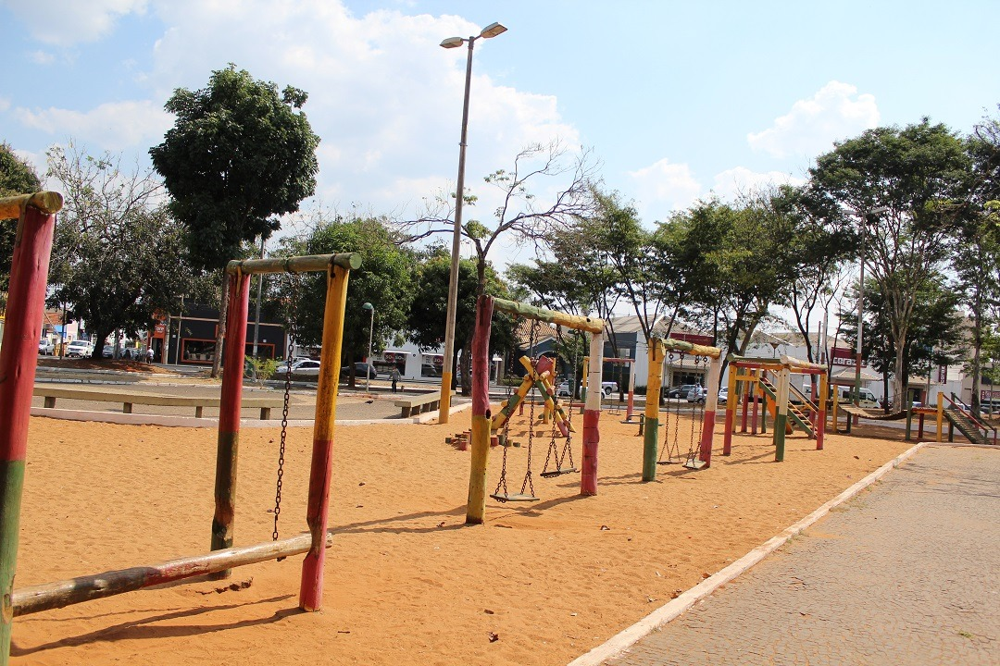

• Em 1962, o arquiteto João Jorge Coury idealizou um projeto para transformar o terreno em praça
No entanto, esse primeiro projeto não foi adiante imediatamente.
• Em 1972, houve outro esboço de projeto por arquitetos e engenheiros durante a gestão do prefeito Virgílio Galassi.
• O espaço que hoje é a Praça Sérgio Pacheco era antes o pátio da Companhia Mogiana de Estradas de Ferro.
• A área foi cedida à Prefeitura para uso público (cívico / social).
• Antes de se tornar praça, a antiga Companhia Mogiana de Estradas de Ferro, desempenhou um papel fundamental no crescimento econômico e urbano de Uberlândia nas primeiras décadas do século XX.
• Com a desativação da ferrovia, a área foi oficialmente cedida para uso do município, sendo destinada a um projeto que valorizasse o espaço cívico e o bem-estar da população.
• Um estudo acadêmico mostra que o terreno passou por um processo de qualificação/requalificação: de área ferroviária para espaço de convivência urbana.
• O arquiteto Joao Jorge Coury idealizou um projeto para a praça tendo rodoviaria, hotel, prefeitura, camara municipal e monumentos,
• Posteriormente outro projeto foi idealizado Esse também previa elementos administrativos (Prefeitura, Câmara, Judiciário), além de espaços culturais, lazer, biblioteca, correios.
• O projeto paisagístico da praça foi idealizado por nomes importantes da arquitetura brasileira, como o paisagista Roberto Burle Marx e o arquiteto Ary Garcia Roza, referência em projetos urbanos da época.

• Inaugurada em 1976, a Praça Sérgio Pacheco foi concebida com elementos modernos de urbanismo e paisagismo. O plano original incluía:
- Um espelho d’água.
- Morros e canteiros elevados que ajudavam a isolar acusticamente o espaço.
- Um total de mais de mil árvores plantadas.
- Calçamentos com mosaico ou pedra portuguesa e desenho de piso artístico.
• Desde sua inauguração, ocorreram diversas modificações — algumas mantendo o espírito original, outras alterando bastante o desenho original da praça. como:
- Espelho d'agua aterrado
- Canteiros mais elevados foram rebaixados
- Espécies ornamentais e outras plantas originais foram substituídas.
- Estufa de plantas existente no projeto original foi demolida.
- Após mudança de gestão municipal e a praça passou a ser fragmentada por avenidas/viadutos que cortaram a área
- A implantação de viações ou terminais de ônibus que invadiram parte do espaço contribuindo para transformar parte de praça em zona de transito ou de espera.
- Foram instaladas quadras poliesportivas, playgrounds, ginásios, pistas de caminhada — que fazem parte hoje da praça.
• Foi construída em 1997 pelo então secretário de Indústria, Comércio e Turismo de Uberlândia, Edson César Zanatta. É usada para recepção de visitantes na época natalina; enfeitada, com neve artificial em alguns momentos, decoração especial etc. Fora da temporada de Natal, já abriga outras atividades (ex: campeonatos de xadrez)
•Parquinho construido apos as mudanças feitas na praça, a intençao dela e atrair familias que buscam se divertir com seus filhos
•A praça possui uma gameleira centenaria que possui cerca de 4 metros de diametro e 50 metros de altura que sobreviveu a diversos empecilios
Em 2017 ela já havia sido parcialmente queimada por ação criminosa.
•Em 13 de novembro de 2023 ocorreu um incêndio que danificou parte da árvore; um galho precisou ser removido para evitar queda.
Após o incêndio, observou-se que a gameleira começou a perder folhas rapidamente, com alterações no tom de verde das folhas. Houve preocupação se ela poderá sobreviver completamente.
• No projeto inicial da praça ela foi planejada com mil arvores.
• O paisagismo era rico e com espécies ornamentais, canteiros elevados, e foi projetado para criar sombra, conforto e apelo estético.
•As árvores servem como sombra para população nos dias de muito sol, constituindo um refúgio urbano no centro.
•Elas também contribuem para a estética, para o microclima local (redução de temperatura, evaporação), conforto no ambiente de convivência, além de visual verde.
•Nossa intençao com este projeto é enriquecer a populaçao com a historia de sobre uma das praças mais importantes de uberlandia
contando a historia da praça contando a historia das construçoes emblematicas e que poucas pessoas tem conhecimento de sua historia.
•Nossas expectativas com este projeto e uma populaçao mais consciente sobre a historia de sua cidade, e manter vivo uma historia tao importante.